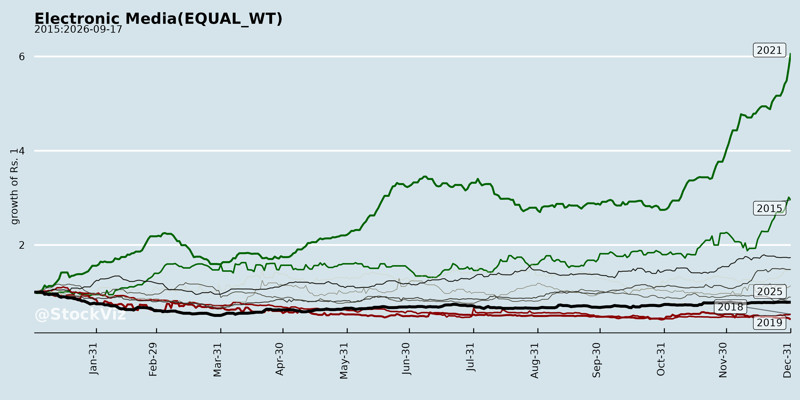
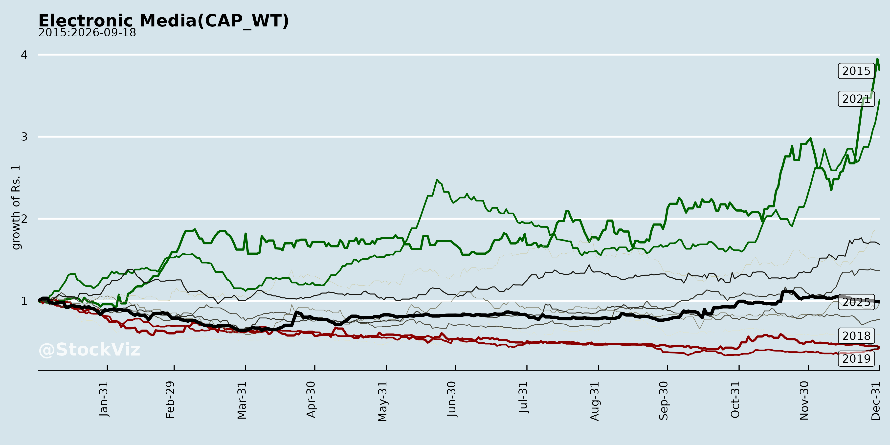
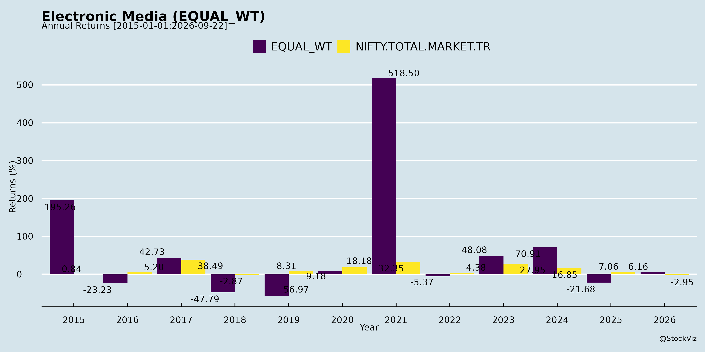
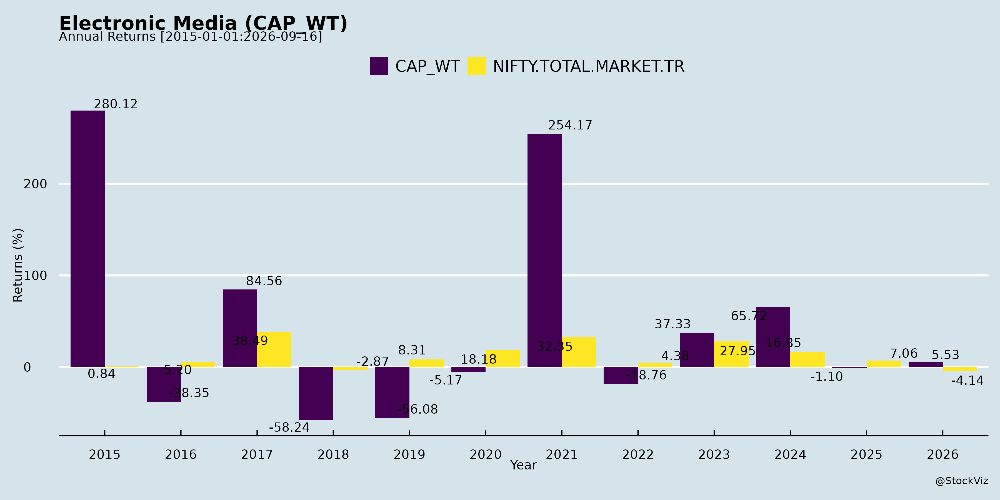
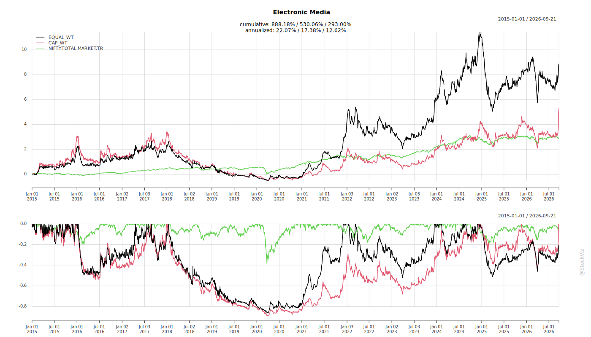
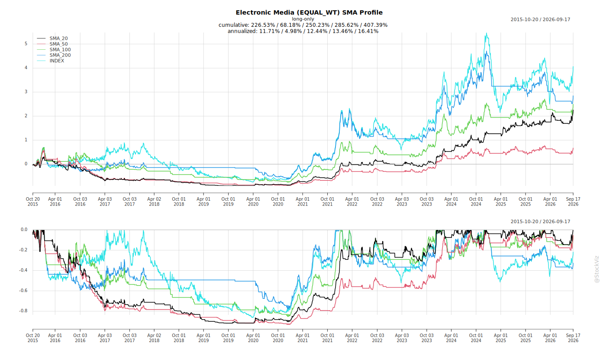
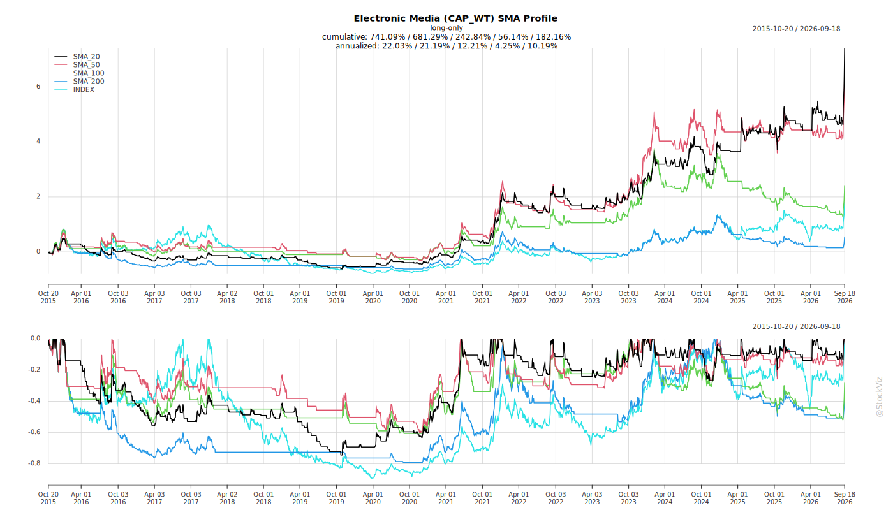
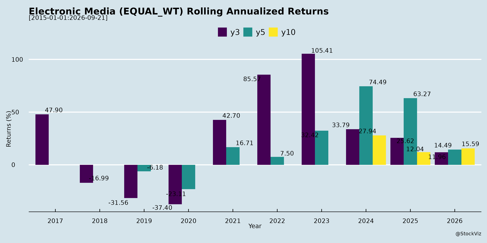
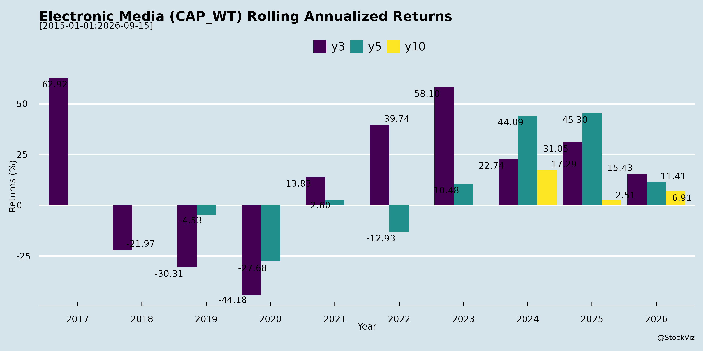

asof: 2025-11-26
Analysis of Cyber Media (India) Limited in the Context of Indian Electronic Media Sector
Cyber Media (India) Ltd. (CyberMedia) operates in the Indian electronic media landscape, focusing on B2B tech media (print/digital content via brands like DataQuest, PCQuest), digital marketing (Google-certified agency with AI/ML tools), and data analytics (insights, market research). The sector benefits from India’s digital economy boom (e.g., rising ad spends, AI adoption, semiconductor initiatives) but faces print-to-digital shifts and cyclical ad markets. Below is an analysis based on the Q1FY26 earnings call transcript.
Tailwinds
Headwinds
Growth Prospects
Key Risks
Overall Summary
CyberMedia is at an inflection point post-legacy cleanup, with strong tailwinds from digital transformation, AI/data trends, and Q1 momentum driving bright growth prospects (25%+ YoY potential in FY26 via diversification). However, headwinds from past stagnation and WC needs persist, alongside key risks in execution and sector cyclicality. Promoters’ skin-in-game via rights issue bolsters outlook. Recommendation: Positive for long-term investors betting on India’s tech media revival, but monitor Q2 results for sustained traction. Comparable to sector peers like Network18 or smaller digital natives, CyberMedia’s brand moat and pivot position it for 20-30% CAGR if risks are navigated.
asof: 2025-11-26
Summary Analysis: Indian Electronic/Digital Media Sector
Using the provided financial disclosures from four listed companies (Cyber Media India Ltd., Diligent Media Corp. Ltd., SAB Events & Governance Now Media Ltd., and Sambhaav Media Ltd.) as inputs, this analysis focuses on the Indian Electronic/Digital Media sector (encompassing digital services, online news, events/MICE, broadcasting, and allied tech/media ops). These firms reflect broader sector trends amid digital transition, ad slowdowns, and economic pressures. Data covers Q1/Q3 FY25-FY26 (quarters ended Jun/Dec 2024-25). Overall, the sector shows modest revenue stability but persistent profitability challenges, with digital segments as bright spots.
Tailwinds (Positive Factors)
Headwinds (Challenges)
Growth Prospects
Key Risks
Overall Outlook: Cautiously Optimistic. Digital tailwinds offer 10-15% growth potential, but headwinds like losses (avg. EBITDA margins <5%) and risks dominate. Investors should monitor Q4 FY25 results for sustained profitability; sector PE low (5-10x) reflects risks but undervalues digital pivot. Recommendation: Selective exposure to digital-heavy players like CyberMedia.
| Metric | Avg. Across Firms (9M FY25) |
|---|---|
| Revenue Growth (YoY) | +5-10% |
| Net Profit Margin | -2% to +5% (excl. exceptions) |
| Debt/Equity | >1x (negative equity in 2/4) |
| Auditor Flags | 3/4 reports qualified/emphasis |
asof: 2025-11-26
Summary Analysis: Indian Electronic Media Sector (Based on Provided Filings)
The provided disclosures from listed media companies (CyberMedia, Diligent Media, SAB Events, Sambhaav Media) offer insights into the Indian electronic/print media sector as of late 2025. While not purely electronic media (mix of print, broadcasting, events), they highlight trends in broadcasting (e.g., Sambhaav’s TV/news investments, broadcasting expenses) amid a challenging environment. Key themes include balance sheet restructuring, financial distress, tax/regulatory pressures, and strategic expansions. Below is a structured analysis of headwinds, tailwinds, growth prospects, and key risks.
Headwinds (Challenges Pressuring the Sector)
Tailwinds (Supportive Factors)
Growth Prospects
Key Risks
| Risk Category | Description | Mitigation/Evidence |
|---|---|---|
| Financial/Liquidity | High debt (Diligent NCRPS; Sambhaav borrowings ₹440Cr), negative cash flows (Sambhaav ops: -₹88Cr H1), insolvency (SAB). | Restructuring (Diligent), loan repayments (Sambhaav net +₹399Cr H1). |
| Regulatory/Litigation | Tax searches/assessments (Sambhaav), arbitration (Diligent), NCLT approvals needed. | Appeals filed; unmodified reviews post-emphasis. |
| Operational | Revenue volatility (ad-dependent), discontinued ops (Sambhaav), high costs (broadcasting/depreciation). | Segment diversification (Media 78%, Tech 22%); no creditor impact from reductions. |
| Governance | Auditor changes/appointments, modified opinions, related-party deals (Sambhaav acquisition). | Arm’s-length pricing (SEBI merchant banker valuation); no promoter benefits. |
| Market/Sector | Digital disruption, competition in regional TV/news; uncertain ad recovery. | Strategic stakes (e.g., 37% in profitable news channel). |
Overall Outlook: Cautiously optimistic for survivors. Headwinds dominate (distress, losses ~₹0.01-0.04 EPS), but tailwinds from restructurings and regional TV bets offer turnaround potential. Growth hinges on ad revival and insolvency resolutions; monitor Q3 FY26 for traction. Sector EPS remains subdued, with high beta to economic cycles. Investors should prioritize firms with clean balance sheets (post-Diligent scheme).
asof: 2025-11-26
Analysis of Cyber Media (India) Limited in the Context of Indian Electronic/Digital Media Sector
Cyber Media (India) Ltd. (CMIL), a 43-year-old B2B tech media player with digital marketing and data analytics arms, exemplifies key dynamics in India’s electronic/digital media landscape. The sector is shifting from traditional print/TV to multi-format digital (websites, podcasts, videos, social), fueled by AI, data monetization, and programmatic advertising. CMIL’s Q1FY26 results (revenue +25.5% YoY to ₹26 Cr, EBITDA ₹1.58 Cr) and strategic pivot post-legacy resolutions highlight its positioning. Below is a structured analysis based on the earnings call transcript.
Tailwinds (Supportive Factors)
Headwinds (Challenges)
Growth Prospects
Key Risks
Summary
CMIL is well-positioned in India’s electronic/digital media evolution, with strong tailwinds from digital transformation, brand legacy, and resolved issues driving Q1 growth (25%+ revenue). Growth prospects are compelling via AI/data analytics, programmatic ads, and adjacencies (semis/EVs), targeting a “bright future” with FY26 robustness. However, headwinds from past stagnation and capex needs persist, while key risks center on execution, competition, and IT cyclicality. Overall, positive inflection post-cleanup (promoter-led rights issue as catalyst), but sustained 20%+ CAGR requires flawless pivot to digital/programmatic. Investors should monitor Q2 results and merger updates for validation. Comparable to sector peers emphasizing multi-platform AI-media hybrids.
asof: 2025-11-26
Analysis of Cyber Media (India) Ltd (CMIL) Press Release for Indian Electronic Media
Context: Cyber Media (India) Ltd (CMIL), listed on BSE (532640) and NSE (CYBERMEDIA), issued a press release on December 12, 2024, announcing the settlement of major legal disputes, asset monetization, and a renewed focus on growth. This disclosure under Regulation 30 of SEBI (LODR) signals a cleanup of legacy issues for the media and publishing group, potentially impacting investor sentiment amid its dormant assets and subsidiaries.
Headwinds (Challenges Faced)
Tailwinds (Positive Momentum)
Growth Prospects
Key Risks
Summary
CMIL’s press release marks a pivotal de-risking milestone, clearing USD 1 Mn + Rs. 9 Cr liabilities and unlocking Rs. 5 Cr lease revenue, tilting the balance toward tailwinds over headwinds. Growth prospects hinge on efficient asset monetization and media revival in a digitizing industry, but key risks around funding execution and competition persist. Investor Outlook: Positive short-term sentiment boost (potential stock rerating from lows), but monitor Q3 FY25 results for cash flow validation. Recommended for watchlist in electronic media portfolios emphasizing turnaround stories.
Disclosure: This is an objective analysis based solely on the provided document; consult financial advisors for investment decisions.
Copyright © 2023 SAS Data Analytics Pvt. Ltd. All rights reserved.